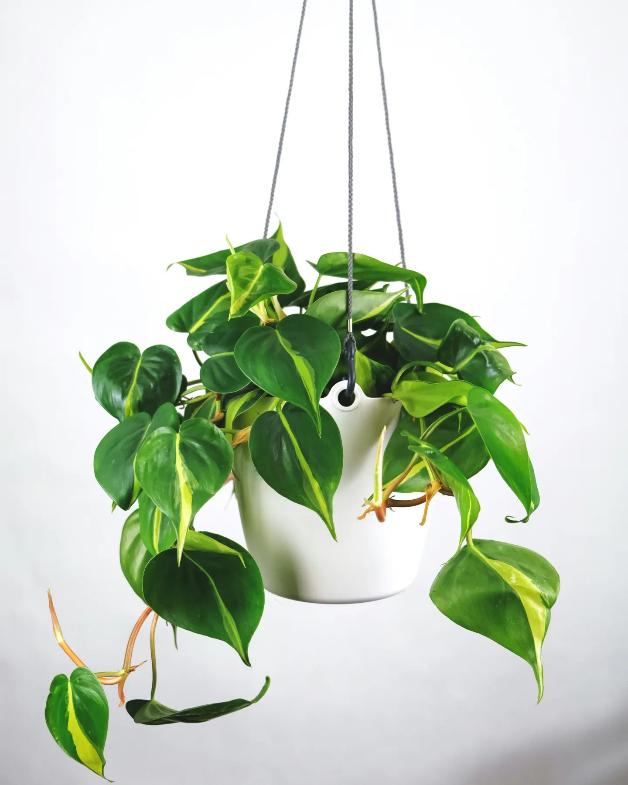
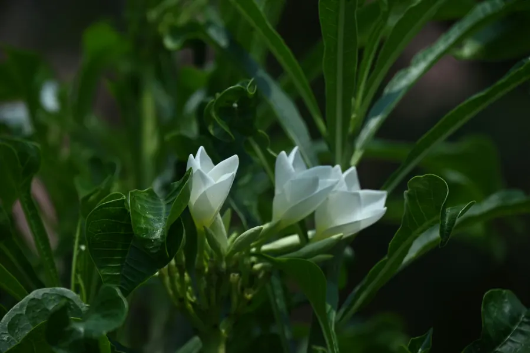
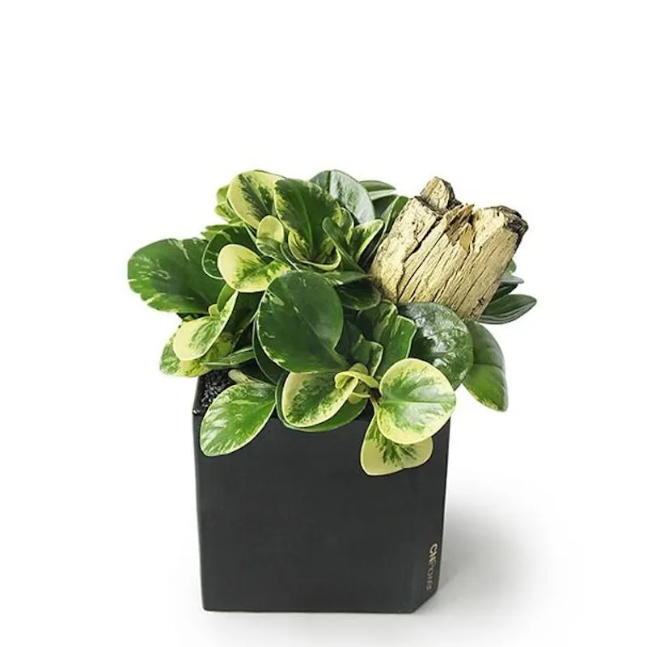

AI × IoT 智慧園藝
讓每個人
讓每個人
都能把植物種好
輸入想種的植物，AI 會依照生長階段、當地天氣與感測器數據，每天告訴你該怎麼照顧；ESP32 感測器還能依你設定的門檻自動澆水與控溫。

AI 種植規劃
Google Gemini 判斷生長週期，依天數產生每日任務、用量與原因。
植物百科
1000 種植物依蔬菜、香草、多肉、觀葉等分類，可用「新手友善」「寵物友善」快速篩選。
IoT 環境監測
ESP32 + DHT22 + 土壤濕度感測器，數據每分鐘上傳並繪製成圖表。
在地天氣
依你的居住縣市取得天氣預報，讓 AI 調整照護建議。
自動控制與裝置狀態
每塊 ESP32 依植物的生長階段自動開風扇、加熱或澆水，隨時查看裝置是否在線與運轉情形。
多植物管理
同時追蹤多個種植專案的天數、階段與進度。

